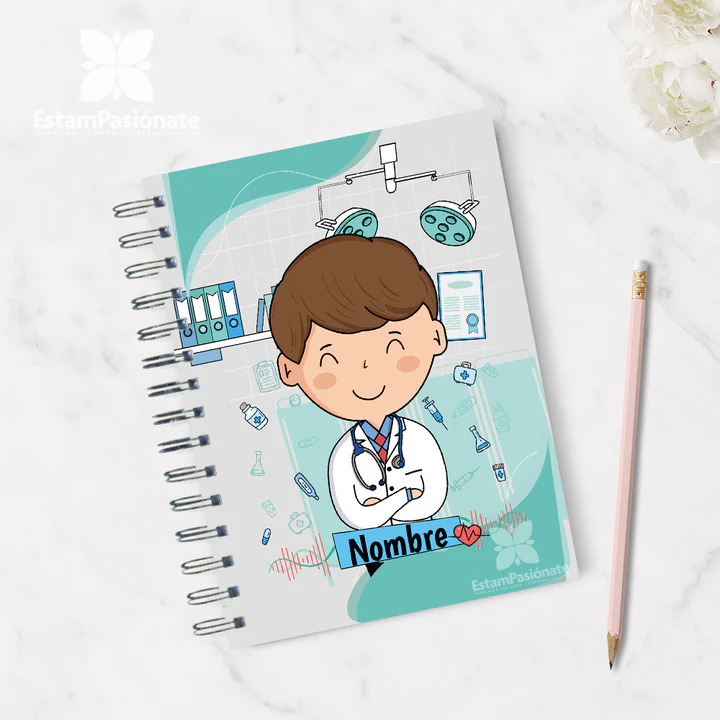

Centralizamos, integramos y automatizamos los procesos médicos para una atención más segura, rápida y eficiente.
ContáctanosMuchas clínicas aún trabajan con registros manuales o sistemas no integrados, lo que genera pérdida de información, duplicidad de datos y dificultades en la gestión de citas médicas. Nuestro sistema soluciona estos problemas centralizando toda la información.
Permite registrar, actualizar y consultar información de pacientes de forma rápida y segura. Evita la duplicidad de datos y mejora la organización de la información clínica.
Accede en tiempo real al historial médico completo del paciente. Incluye diagnósticos, tratamientos y consultas anteriores.

Gestiona citas médicas de manera eficiente con un sistema digital. Reduce tiempos de espera y mejora la planificación.